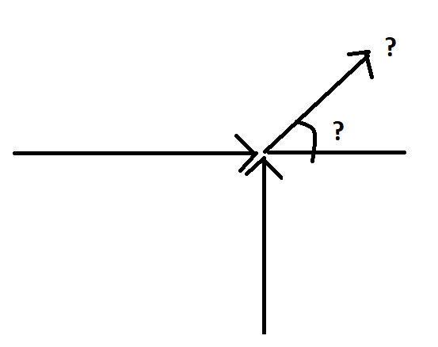

Törmäyksiä
Contents
Törmäyksiä#
Törmäykset voidaan jakaa kolmeen luokkaan: epäelastiset törmäykset, elastiset törmäykset ja näiden välimuotona osittain elastiset törmäykset. Epäelastisissa törmäyksissä kappaleet tarttuvat kiinni toisiinsa ja jatkavat matkaansa yhdessä. Ne voivat myös muuttaa muotoaan, esimerkiksi auto voi törmäyksessä vaurioitua. Muodonmuutokseen kuluu osa kappaleiden energiasta. Elastinen törmäys puolestaan tarkoittaa sitä, että kappaleille ei tapahdu törmäyksessä muuta kuin suunnan ja nopeuden muutos. Niiden kokonaisenergia säilyy ennallaan. Tällaisista törmäyksistä ei kuulu edes ääntä, sillä sekin kuluttaisi energiaa. Ilman molekyylit törmäilevät koko ajan toisiinsa elastisesti. Useimmat havaitsemamme törmäykset ovat osittain elastisia, eli kahden edellisen törmäystyypin väliltä.
Epäelastinen törmäys#
Epäelastisessa törmäyksessä kappaleet tarttuvat toisiinsa kiinni. Tällöin niillä on törmäyksen jälkeen vain yksi yhteinen loppunopeus \(u\). Tällöin liikemäärän säilymislaki \(m_1 v_1 + m_2 v_2 = m_1 u_1 + m_2 u_2\) muuttuu muotoon
\(m_1 v_1+m_2 v_2=(m_1+m_2)u\)
Esimerkki
Luoti, jonka massa on 15 g, ammutaan nopeudella 300 m/s puupalaan, joka on paikallaan ja jonka massa on 200 g. Luoti jää puupalan sisälle. Millä nopeudella puupala liikkuu heti osuman jälkeen?
Ratkaisu
Ratkaistaan epäelastisen törmäyksen liikemäärän säilymislaista \(m_1 v_1+m_2 v_2=(m_1+m_2)u\) loppunopeus $u=\frac{m_1 v_1 + m_2 v_2 }{m_1 + m_2} ja sijoitetaan luvut:
\(u=\frac{15~\text{g} \cdot 300~\frac{\text{m}}{\text{s}} + 200~\text{g}\cdot 0~\frac{\text{m}}{\text{s}}}{15~\text{g}+200~\text{g}}=21~\frac{\text{m}}{\text{s}}\)
Huomaa, että massat on sijoitettu grammoina. Yleensä fysiikan kaavoissa massojen pitää olla kilogrammoina. Tässä kaavassa esiintyy massojen suhde, eli yksiköt supistuisivat joka tapauksessa pois, eikä niillä siis ole merkitystä.
Kaksiulotteisissa törmäyksissä liikemäärä säilyy erikseen vaakasuunnassa ja pystysuunnassa. Yksinkertainen esimerkki kaksiulotteisesta epäelastisesta törmäyksestä on risteyskolari, jossa toinen ajoneuvo liikkuu esimerkiksi itä-länsi-suunnassa ja toinen pohjois-etelä-suunnassa. Olisi kuitenkin mahdollista myös käsitellä sellaisia törmäyksiä, jotka eivät tapahdu suorassa kulmassa. Tällöin vinosti liikkuvan kappaleen nopeus jaettaisiin toisen nopeuden suuntaiseen ja sitä vastaan kohtisuoraan nopeuteen. Tällä opintojaksolla ei tarkastella sellaisia tilanteita. Lisäksi kaksiulotteisten törmäysten tarkastelu rajataan vain epäelastiseen tapaukseen.

Esimerkki
Jalkapalloilija, jonka massa on 70 kg, juoksee suoraan maalia kohti nopeudella 7 m/s. Toinen pelaaja, jonka massa on 80 kg, törmää häneen kohtisuorasti sivusta nopeudella 8 m/s. Pelaajat takertuvat toisiinsa. Millä nopeudella ja mihin suuntaan he etenevät heti törmäyksen jälkeen?
Ratkaisu
Merkitään vaakasuuntaisia (=maalia kohti) nopeuksia alaindeksillä \(x\) ja pystysuuntaisia (=kohtisuorasti sivusta) alaindeksillä \(y\). Alaindeksi 1 viittaa ensimmäiseen pelaajaan (\(m_1=70~\text{kg}\)) ja alaindeksi 2 jälkimmäiseen pelaajaan (\(m_2=80~\text{kg}\)).
\(v_{1x}=7~\text{m/s}, v_{1y}=0~\text{m/s}, v_{2x}=0~\text{m/s}, v_{2y}=8~\text{m/s}\)
Liikemäärä säilyy vaakasuunnassa: \(v_{1x} m_1+v_{2x} m_2=u_x (m_1+m_2)\)
Tästä voidaan ratkaista \(u_x= \frac{70~\text{kg}\cdot 7~\frac{\text{m}}{\text{s}}} {70~\text{kg}+80~\text{kg}}=3.3~\frac{\text{m}}{\text{s}}\)
Liikemäärä säilyy pystysuunnassa: \(v_{1y} m_1+v_{2y} m_2=u_y (m_1+m_2)\)
Tästä saadaan \(u_y= \frac{80~\text{kg}\cdot 8~\frac{\text{m}}{\text{s}}}{70~\text{kg}+80~\text{kg}}=4.3~\frac{\text{m}}{\text{s}}\)
Kokonaisnopeus on \(u=\sqrt{u_x^2+u_y^2} = \sqrt{(3.3~\text{m/s})^2+(4.3~\text{m/s})^2}=5.4~\text{m/s}\)
Suuntakulma on \(\alpha=\arctan{\frac{u_y}{u_x}}=52^{\circ}\).
Elastinen törmäys#
Jos kappaleet eivät tartu kiinni toisiinsa, kyseessä on osittain elastinen tai täysin elastinen törmäys. Tällöin kummankaan kappaleen nopeutta törmäyksen jälkeen ei tunneta. Liikemäärän säilymislain lisäksi tarvitaan siis toinenkin yhtälö.
Täysin elastisessa törmäyksessä liikemäärän lisäksi säilyy systeemin liike-energia. Systeemin liike-energialla tarkoitetaan kummankin kappaleen liike-energioiden summaa. Kummankin kappaleen liike-energia voi siis muuttua törmäyksessä, mutta niiden summa pysyy samana. Voimassa ovat siis yhtälöt
\(m_1 v_1+m_2 v_2=m_1 u_1+m_2 u_2\)
ja
\(\frac{1}{2} m_1 v_1^2+\frac{1}{2} m_2 v_2^2=\frac{1}{2} m_1 u_1^2+\frac{1}{2} m_2 u_2^2\).
Liike-energian yhtälössä on jokaisessa termissä kerroin \(\frac{1}{2}\). Yhtälön molemmat puolet voi kertoa luvulla 2, jolloin se sievenee muotoon
\(m_1 v_1^2+m_2 v_2^2=m_1 u_1^2+m_2 u_2^2\).
Tätä voi siis käyttää ongelmien ratkaisussa toisena yhtälönä liikemäärän säilymislain lisäksi.
Toinen vaihtoehto liikemäärän säilymislain pariksi on yhtälö, joka kuvaa kappaleiden nopeuseron säilymistä:
\(v_1-v_2=u_2-u_1\)
Kappaleiden nopeuksien erotus siis pysyy samana ennen törmäystä ja törmäyksen jälkeen. Alaindeksien järjestyksen kanssa tulee olla tarkkana.
Perustelu
Perustellaan nopeuseron säilymistä kuvaava yhtälö.
Liikemäärän säilymislaki voidaan muokata muotoon \(m_1 (v_1-u_1 )=m_2 (u_2-v_2 )\).
Liike-energian säilymislaki puolestaan on mahdollista muokata muotoon
\(m_1 (v_1^2-u_1^2 )= m_2 (u_2^2-v_2^2)\)
ja edelleen sieventämällä ja binomikaavan \((a-b)^2=(a+b)(a-b)\) avulla saadaan
\(m_1 (v_1-u_1 )(v_1+u_1 )=m_2 (u_2-v_2)(u_2+v_2)\).
Sijoittamalla muokattu liikemäärän säilymislaki edelliseen yhtälöön saadaan
\(m_2 (u_2-v_2)(v_1+u_1)=m_2 (u_2-v_2 )(u_2+v_2 )\)
Tästä muokkaamalla saadaan tulos \(v_1+u_1=u_2+v_2\) ja edelleen \(v_1-v_2=u_2-u_1\).
Esimerkki
Fysiikan tunnilla laitetaan kitkattomalla radalle kappale A (m=60 g), joka liikkuu nopeudella 0.80 m/s, törmäämään paikallaan olevaan kappaleeseen B (m=120 g). Kappaleet eivät tartu toisiinsa. Mitkä ovat kappaleiden nopeudet törmäyksen jälkeen?
Ratkaisu
Kirjoitetaan liikemäärän säilymislaki ja kappaleiden nopeuseron säilyminen:
\(m_1 v_1+m_2 v_2=m_1 u_1+m_2 u_2, v_1-v_2=u_2-u_1\)
Sijoittamalla kappaleen B nopeus \(v_2=0\) m/s yhtälöt sievenevät muotoon
\(m_1 v_1=m_1 u_1+m_2 u_2, v_1=u_2-u_1\)
Ratkaistaan jälkimmäisestä yhtälöstä kappaleen B nopeus törmäyksen jälkeen: \(u_2=v_1+u_1\)
Sijoitetaan tämä liikemäärän säilymislakiin:
\(m_1 v_1=m_1 u_1+m_2(v_1+u_1)\)
\(m_1 v_1=m_1 u_1+m_2 v_1+m_2 u_1\)
Siirretään \(m_2 v_1\) oikealta vasemmalle puolelle ja asetetaan \(v_1\) yhteiseksi tekijäksi:
\(v_1 (m_1-m_2) v_1=(m_1+m_2) u_1\)
Vaihdetaan puolet ja ratkaistaan kappaleen A loppunopeus \(u_1\):
\(u_1=\frac{(m_1-m_2) v_1}{m_1+m_2}\)
Sijoitetaan lukuarvot \(m_1=60~\text{g}, m_2=120~\text{g}, v_1=0.80~\text{m/s}\):
\(u_1=\frac{(60~\text{g}-120~\text{g})\cdot 0.80~\text{m/s}}{60~\text{g}+120~\text{g}}=-0.27~\text{m/s}\)
Lopuksi voidaan ratkaista vielä \(u_2=0.80~\text{m/s}-0.27~\text{m/s}=0.53~\text{m/s}\)
Tehtävä voitaisiin tietysti ratkaista myös syöttämällä yhtälöt kerralla WolframAlphaan:
solve 60*0.8+120*0=60*u1+120*u2, (0.8-0)=(u2-u1)
tai liike-energian säilymislain avulla:
solve 60*0.8+120*0=60*u1+120*u2, 60*0.8^2+120*0^2=60*u1^2+120*u2^2
Osittain elastinen törmäys#
Osittain elastisessa törmäyksessä liike-energia ei säily täysin, vaan energiaa muuttuu törmäyksessä muihin muotoihin, esimerkiksi kappaleiden muodon muuttuessa tai siksi, että törmäyksestä yleensä kuuluu jonkinlainen ääni. Osittain elastista törmäystä kuvaa ns. sysäyskerroin
\(e=\frac{u_2-u_1}{v_1-v_2}\)
eli kappaleiden loppunopeuksien eron suhde alkunopeuksien eroon. Kirjain \(e\) on tässä vain vakiintunut lyhenne eikä Neperin luku. Täysin elastisessa törmäyksessä \(e=1\), sillä nopeuksien eroksi todettiin sama ennen törmäystä ja törmäyksen jälkeen, ja täysin epäelastisessa törmäyksessä \(e=0\), sillä kappaleen liikkuvat yhdessä samalla nopeudella eli \(u_1=u_2\). Tätä sysäyskertoimen määritelmää voidaan nyt käyttää törmäysongelmissa toisena yhtälönä, yhdessä liikemäärän säilymislain kanssa.
Esimerkki
Auto, jonka massa on 1400 kg, ajaa toisen auton, jonka massa on 1300 kg, perään. Ennen törmäystä autojen nopeudet ovat 15 m/s ja 10 m/s. Törmäys on osittain elastinen siten, että sysäyskerroin on 0.7. Mitkä ovat autojen nopeudet törmäyksen jälkeen?
Ratkaisu
Merkitään autojen massoja \(m_1=1400~\text{kg}\) ja \(m_2=1300~\text{kg}\) ja nopeuksia \(v_1=15~\text{m/s}\) ja \(v_2=10~\text{m/s}\).
Nyt jälkimmäisen eli edellä ajaneen auton loppunopeus saadaan sysäyskertoimesta: \(u_2-u_1=e(v_1-v_2 )\) ja edelleen \(u_2=u_1+e(v_1-v_2)\).
Sijoitetaan tulos liikemäärän säilymislakiin: \(m_1 v_1+m_2 v_2=m_1 u_1+m_2 (u_1+e(v_1-v_2 ))\)
Tästä saadaan peräänajajan loppunopeus \(u_1= \frac{m_1 v_1+m_2 v_2-m_2 e(v_1-v_2)}{m_1+m_2}\)
\(u_1=\frac{1400~\text{kg}\cdot 15~\frac{\text{m}}{\text{s}}+1300~\text{kg}\cdot 10~\frac{\text{m}}{\text{s}}-1300~\text{kg}\cdot 0.7 \cdot (15~\frac{\text{m}}{\text{s}}-10~\frac{\text{m}}{\text{s}})}{1400~\text{kg}+1300~\text{kg}}\)
\(u_1= 10.9~\frac{\text{m}}{\text{s}}=39~\frac{\text{km}}{\text{h}}\)
Edellä ajaneen auton nopeudeksi saadaan \(u_2=10.9~\frac{\text{m}}{\text{s}}+0.7\cdot (15~\frac{\text{m}}{\text{s}}-10~\frac{\text{m}}{\text{s}}) = 14.4~\frac{\text{m}}{\text{s}} = 52~\frac{\text{km}}{\text{h}}\).
WolframAlphaan yhtälöt voi syöttää seuraavasti:
solve 1400*15+1300*10=1400*u1+1300*u2, 0.7=(u2-u1)/(15-10)